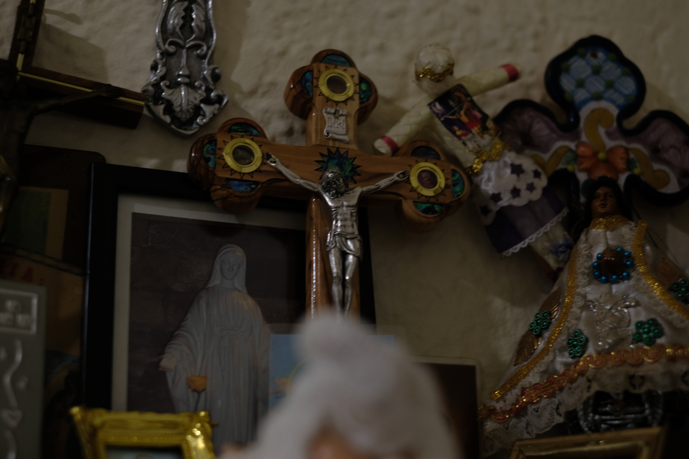

This image was taken by me around a year ago, I chose this image in because I felt it very accurately shows what a shallow depth of field is, with the extemely blurred backgroud with only the pink flower being in focus. I love the details on the flower and how intricate and vibrant it looks.

This image was taken in my grandmothers house in the corner of her alter she has, it is filled with religous paraphernalia. It is a close up focusing on the Jesus nailed to the cross. However with the deep depth of field, you can see the other religous images such as the virgin mary.